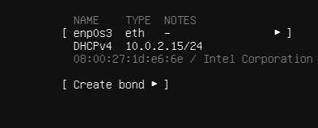
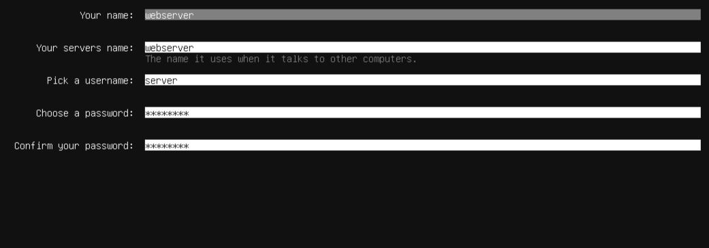
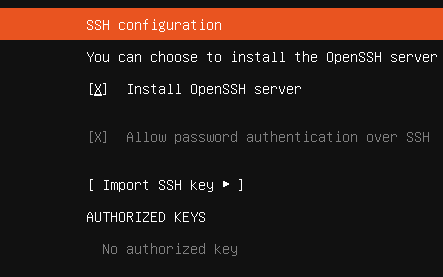

Install Ubuntu Server
With your Ventoy USB ready, you'll now install Ubuntu Server on your machine. The installer is text-based but straightforward. This step takes around 30 minutes.
Boot the Ubuntu Installer
With the Ventoy USB plugged in, power on your server and select the Ubuntu Server ISO from the Ventoy boot menu. After a moment, the Ubuntu Server installer will load.
Select Try or Install Ubuntu Server from the GRUB menu and press Enter.
Language & Keyboard Layout
The first screen asks for your preferred language. Select English (or your language of choice) and press Enter.
Next, choose your keyboard layout. If you're unsure, use the Identify keyboard option and follow the prompts. Most users can select English (US).
Tab to move between fields, and Enter to confirm selections. Space bar toggles checkboxes.
Network Setup
The installer will attempt to automatically configure your network via DHCP. If your server is connected via Ethernet, this usually works without any changes.
You'll see your network interface listed (e.g., ens3 or eth0) with an assigned IP address. Make a note of this IP — you'll need it later to SSH into the machine.
/etc/netplan/ config files.

Storage & Partitions
Choose Use an entire disk for a straightforward setup. Select your server's main drive from the list.
On the next screen, review the partition layout. Set the volume size to the maximum size displayed on the drive, then keep the default layout for most setups. Select Done and then confirm the destructive action when prompted.
Create Your User Profile
Fill in your name, a server hostname, a username, and a password. For this guide use the following profile values to match the example environment:
- Server name:
webos - Username:
webos - Password: choose a strong password
myserver or webserver01 works well.

Enable OpenSSH Server
On the SSH setup screen, check the box for Install OpenSSH server. This allows you to connect to your server remotely from another computer, which is how you'll manage it going forward.
You can skip importing SSH keys for now if you don't have any set up. Press Done to continue.

Finish Installation & Reboot
Skip the featured snaps screen (just select Done) and wait for the installation to complete. This can take 5–15 minutes depending on your hardware.
When you see Installation complete!, select Reboot Now. Remove the USB drive when prompted and press Enter.